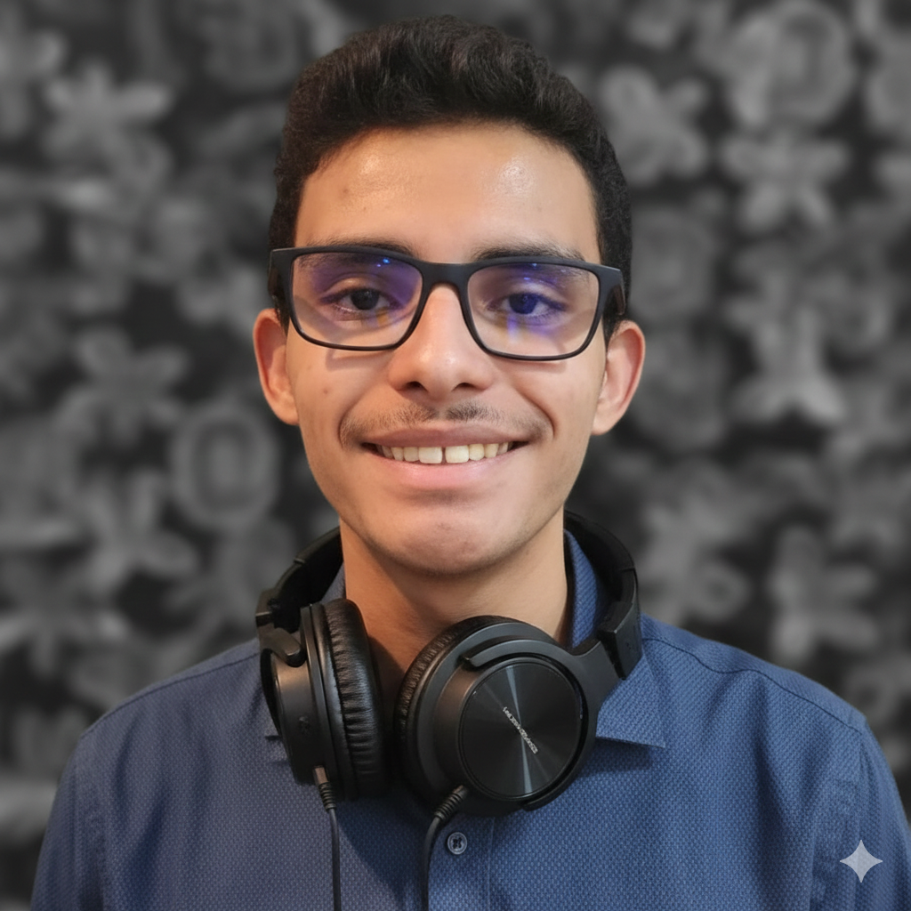

Edição de Vídeo Completa
para o seu Negócio
Do conteúdo educativo que engaja aos vídeos curtos que convertem.
Meu Portfólio
Confira abaixo alguns dos meus trabalhos finais destacados em vídeo. Projetos editados com foco em alta retenção, ritmo dinâmico e identidade visual marcante.
Comparativo: Antes vs Depois
Trabalhos em Destaque
(Insira seu iframe/vídeo aqui)
Edição Dinâmica - YouTube
(Insira seu iframe/vídeo aqui)
Corte de Marketing - Reels

Sobre Mim
Olá! Sou editor de vídeo com 2 anos de experiência, especializado em criar conteúdos que engajam, ensinam e convertem. Minha bagagem inclui a edição de videoaulas didáticas para cursinhos preparatórios e infoprodutos na Hotmart, onde prezo pela clareza e retenção do aluno. Também possuo forte atuação no YouTube, desenvolvendo narrativas dinâmicas com foco em audiência, e na criação de vídeos curtos (Reels e Shorts) estruturados para estratégias de marketing e conversão rápida. Seja para educar, entreter ou vender, entrego uma edição profissional que valoriza a sua mensagem e conecta com o público certo.
Experiência Profissional
Editor de Vídeo | Vale Concursos (2 anos)
Atuei na pós-produção audiovisual voltada para a preparação de concursos públicos, transformando gravações brutas de aulas densas em conteúdos dinâmicos e didáticos.
- Infoprodutos e Área de Membros (Hotmart): Edição estruturada de módulos de videoaulas, focando em cortes cirúrgicos, eliminação de ruídos e inserção de recursos visuais para auxiliar na retenção e aprendizado do aluno.
- Canais de Tração (YouTube): Edição de conteúdos estratégicos como aulões e dicas rápidas, aplicando técnicas de ganchos iniciais fortes e ritmo dinâmico para prender a atenção do espectador na plataforma.
Canais que já Editei
Vale Concursos | Edição de Videoaulas e Infoprodutos
Pós-produção técnica e estruturada para cursinho preparatório de concursos públicos. Foco total na clareza do conteúdo didático, eliminação de ruídos, além de suporte na criação de conteúdos dinâmicos para YouTube e Hotmart.
Canal Química Intrante | Edição Educativa e Narrativa
Produção voltada para a divulgação científica e neuroquímica, transformando roteiros complexos sobre reações e processos de laboratório em vídeos altamente visuais. Aplicação de ritmo didático e recursos que facilitam a compreensão do espectador.
Canal Mitada Play | Edição com Foco em Retenção e Dinamismo
Pós-produção voltada para o público jovem e de entretenimento, aplicando cortes rápidos, sound design strategic, efeitos visuais e um ritmo acelerado para garantir altos níveis de retenção e engajamento.
Canal Kevin MSPlay | Conteúdo Dinâmico e Gamificado
Desenvolvimento e edição de conteúdo focado em engajamento de audiência, unindo uma narrativa ágil a elementos gráficos, ganchos iniciais fortes e estratégias audiovisuais que mantêm o espectador entretido do início ao fim.
Saber Mais
Além de trabalhar nos bastidores produzindo grandes projetos para meus clientes, eu também compartilho meu conhecimento e paixão pelo audiovisual na internet!
Meu Canal sobre Edição de Vídeo
Acompanhe tutoriais, dicas de workflow, técnicas de retenção e bastidores da pós-produção diretamente no meu canal oficial.
Acessar meu Canal no YouTube 🎥